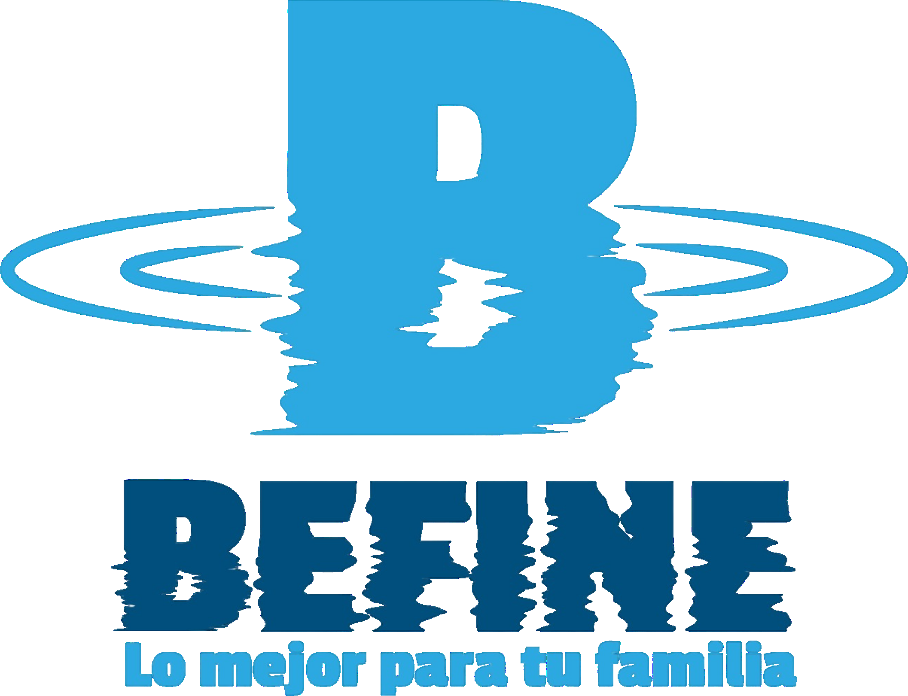

Agua purificada a domicilio · Quilicura y sector norte
Bidones y recargas de agua purificada de 20 L y 12 L, dispensadores frío/calor y despacho a domicilio en Quilicura, Huechuraba, Recoleta, Valle Grande y Valle Lo Campino. Envío gratis desde $7.000 y entrega en 24 horas hábiles.
Mueve el mouse: el agua reacciona en toda la página.
Arrastra para explorar. Compra una vez y Befine te recuerda.
La experiencia de quienes reciben su agua Befine a domicilio.